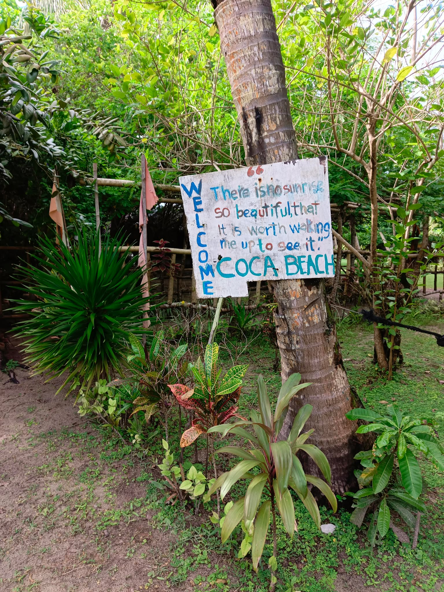

Coca Beach
Coca Beach is one of Sapao’s quieter coastal treasures, known for its open-air cottages, calm atmosphere, and easy access from the barangay. It feels especially inviting for families or couples looking for a simple beach day away from the busy town center.
According to local stories, the beach became a community destination after the Sison family opened the area for public use, turning a private family space into a welcoming spot for gatherings, rest, and recreation.

Photo gallery


Fees and access
Pricing
Open-air cottages usually cost between ₱500 and ₱1,000 depending on size and setup. Day-use access is ₱10 for visitors who want to enjoy the beach for a short stay.
How to get there
From Guiuan town proper, travel by local vehicle or tricycle toward Barangay Sapao and continue to the beach area through the barangay road. The walk to the shore is short, but visitors should be prepared for a simple trail.
Contact and opening hours
Visitors are welcomed to enjoy the beach during daytime hours. Because the spot is still developing as a local tourism site, it is best to ask around the barangay for the latest access and cottage availability.